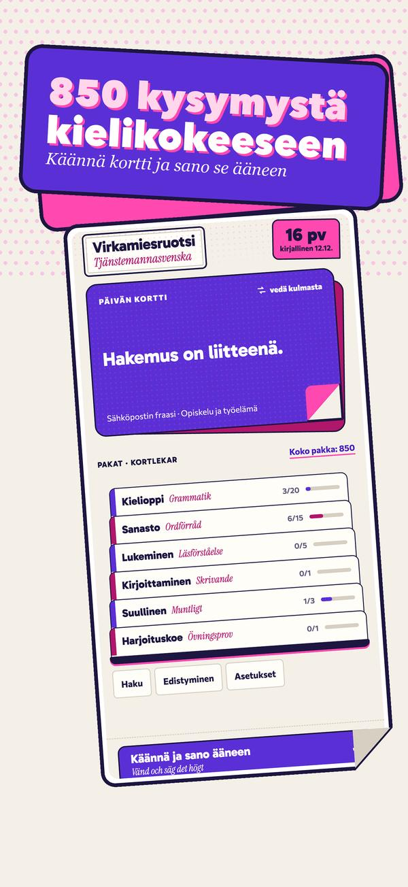
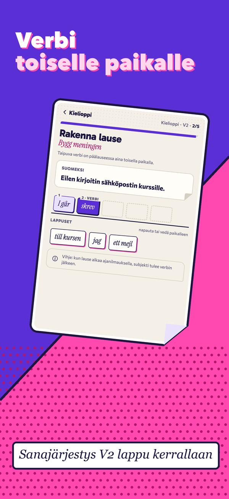
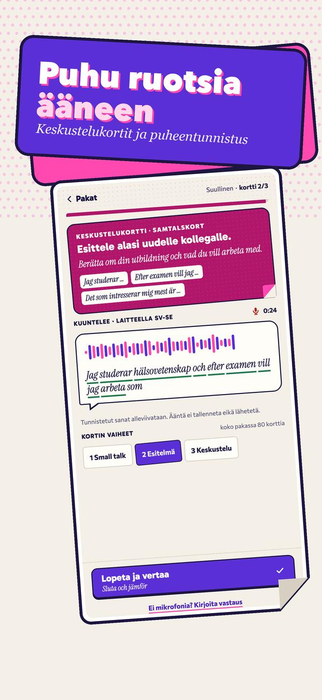

Virkamiesruotsi – kielikoe
Ruotsin kielen koe ja sanasto
Kertaosto – ei tilausta. Virkamiesruotsi – kielikoe auttaa valmistautumaan yliopiston ruotsin kielen kokeeseen: kirjalliseen ja suulliseen osaan, tyydyttävään tai hyvään taitoon. Jokainen päivä alkaa yhdellä kortilla: lue suomeksi, käännä ja sano ruotsiksi ääneen.



- 850 omaa kysymystä: kielioppi 220, alasanasto 480, lukeminen 150
- Selitys suomeksi jokaiseen vastaukseen
- Sanajärjestys V2 lappu kerrallaan – verbi toiselle paikalle
- 80 keskustelukorttia: puheentunnistus laitteella tai kuuntele ja toista
- 40 kirjoituspohjaa, fraasipankki ja sanalaskuri
- 12 alan sanastot, noin 1 500 sanaa
- 10 harjoituskoetta: kirjallinen ja suullinen erikseen
- Offline ja ilman tiliä – ääntä ei tallenneta
Pian App Storessa
Tuki · Tietosuoja